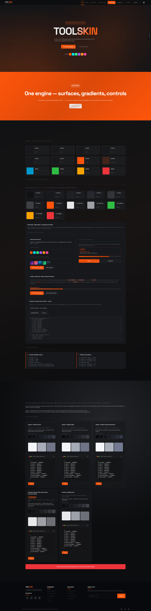

Live render of assets/css/next/system/surfaces.css — the
--ts-this-bg-* derivative chain (spec §3 + §10). Set one token,
the whole chain recomputes; the cascade propagates it (Rule 4).
The surface tier feeds --ts-this-bg for the demo region below.
The four knobs write the global feel tokens on :root — every
derivative absorbs the change with no rule rewrite.
--ts-this-bg-* token
All swatches below derive from the single --ts-this-bg set on
their container. Computed values are read live via getComputedStyle.
Hover, press, and tab-focus this element. Each state pulls its background
and border straight from the chain — no color-mix in the
component, no hardcoded state colors.
.surf-card is styled once. Each nested card only
re-roots --ts-this-bg — the derivative chain recomputes per level
and the cascade carries it inward. No per-level rules exist.

Source: docs/handoffs/_rebuild-visual-audit.md — Batch C,
surface-lab.html. The showcase's surface lab renders the
--ts-bg-0…5 ladder as a swatch matrix plus a "GLOBAL CONTRAST
TWEAK" slider and a surface-token export — the live equivalent of the
derivative chain this sandbox rebuilds at the system layer. Visual-audit
verdict for this surface: no anomalies — surface ladder + tunable
mixing confirmed canonical. This sandbox reproduces that surface
tooling on top of the rebuilt token chain.
Loads assets/css/next/primitives/colors.css +
assets/css/next/system/surfaces.css — no chain logic is inlined.
The accent picker writes --ts-accent; the theme button flips
data-theme; the preset selector toggles a .ts-preset-*
class on <html>. Every knob writes a single token and the
whole chain re-resolves.